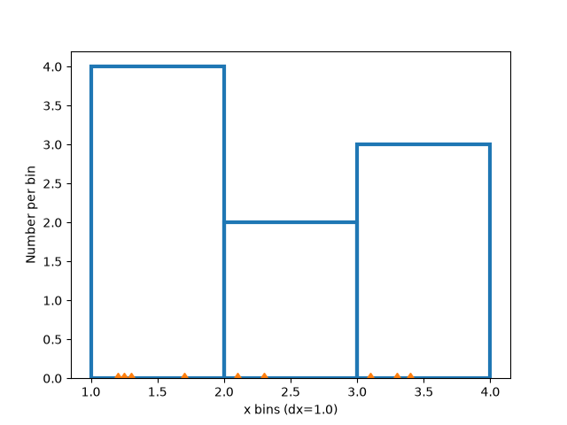
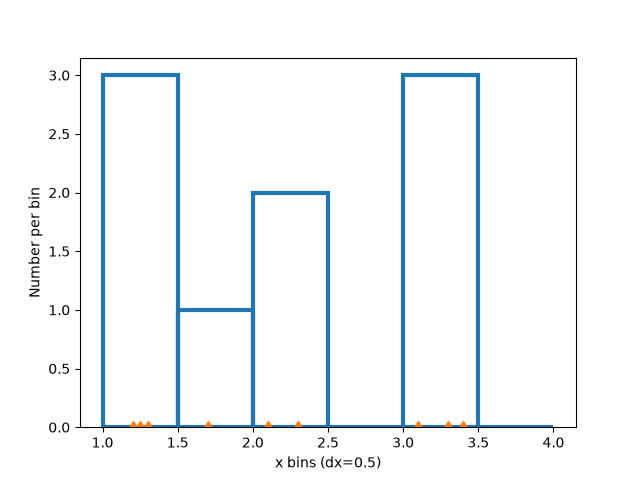
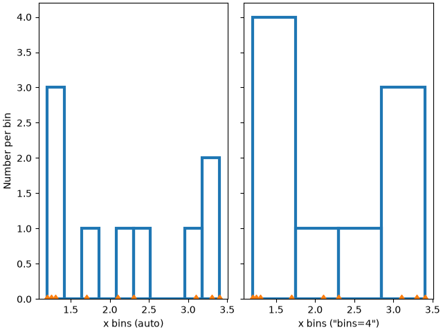
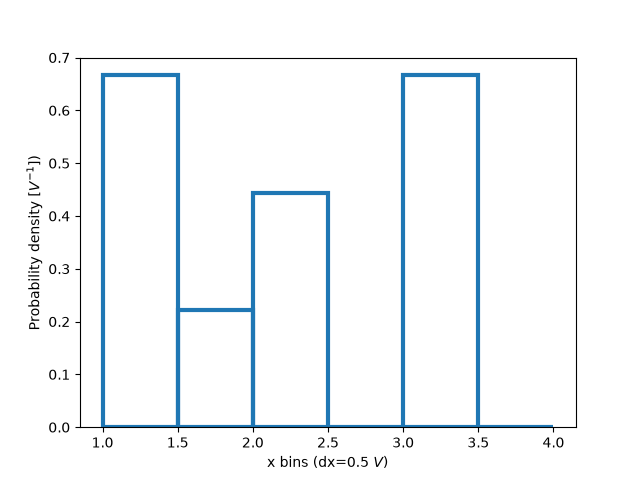
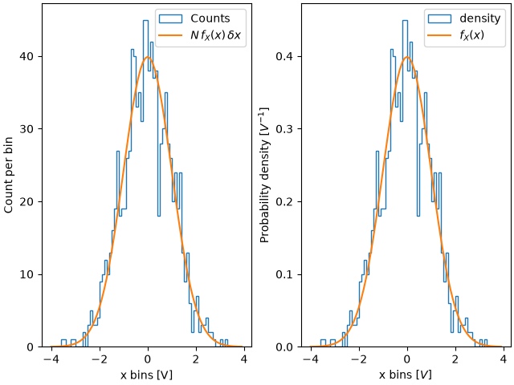
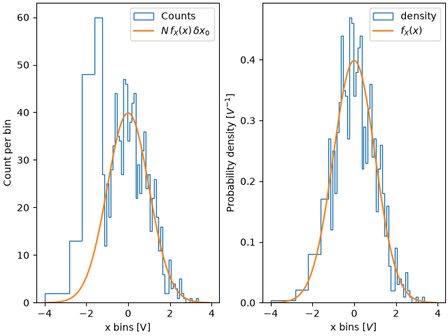
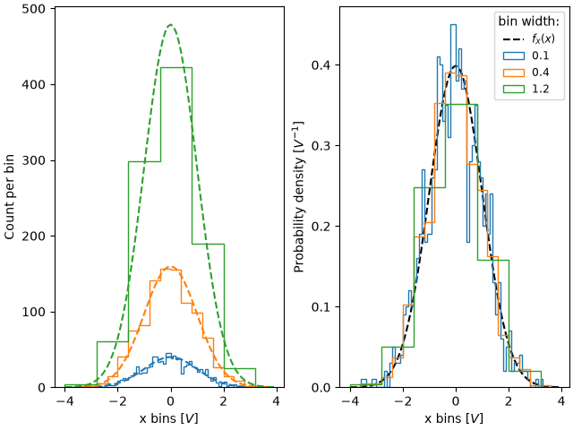
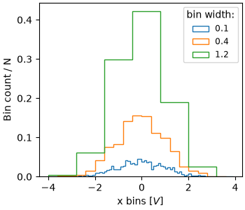
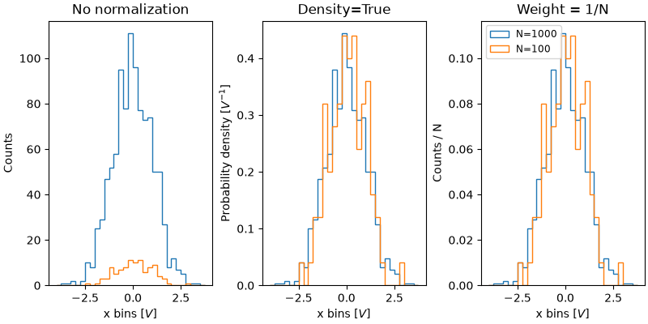

Note
Go to the end to download the full example code.
Histogram bins, density, and weight#
The Axes.hist method can flexibly create histograms in a few different ways,
which is flexible and helpful, but can also lead to confusion. In particular,
you can:
bin the data as you want, either with an automatically chosen number of bins, or with fixed bin edges,
normalize the histogram so that its integral is one,
and assign weights to the data points, so that each data point affects the count in its bin differently.
The Matplotlib hist method calls numpy.histogram and plots the results,
therefore users should consult the numpy documentation for a definitive guide.
Histograms are created by defining bin edges, and taking a dataset of values and sorting them into the bins, and counting or summing how much data is in each bin. In this simple example, 9 numbers between 1 and 4 are sorted into 3 bins:
import matplotlib.pyplot as plt
import numpy as np
rng = np.random.default_rng(19680801)
xdata = np.array([1.2, 2.3, 3.3, 3.1, 1.7, 3.4, 2.1, 1.25, 1.3])
xbins = np.array([1, 2, 3, 4])
# changing the style of the histogram bars just to make it
# very clear where the boundaries of the bins are:
style = {'facecolor': 'none', 'edgecolor': 'C0', 'linewidth': 3}
fig, ax = plt.subplots()
ax.hist(xdata, bins=xbins, **style)
# plot the xdata locations on the x axis:
ax.plot(xdata, 0*xdata, 'd')
ax.set_ylabel('Number per bin')
ax.set_xlabel('x bins (dx=1.0)')

Modifying bins#
Changing the bin size changes the shape of this sparse histogram, so its a good idea to choose bins with some care with respect to your data. Here we make the bins half as wide.
xbins = np.arange(1, 4.5, 0.5)
fig, ax = plt.subplots()
ax.hist(xdata, bins=xbins, **style)
ax.plot(xdata, 0*xdata, 'd')
ax.set_ylabel('Number per bin')
ax.set_xlabel('x bins (dx=0.5)')

We can also let numpy (via Matplotlib) choose the bins automatically, or specify a number of bins to choose automatically:
fig, ax = plt.subplot_mosaic([['auto', 'n4']],
sharex=True, sharey=True, layout='constrained')
ax['auto'].hist(xdata, **style)
ax['auto'].plot(xdata, 0*xdata, 'd')
ax['auto'].set_ylabel('Number per bin')
ax['auto'].set_xlabel('x bins (auto)')
ax['n4'].hist(xdata, bins=4, **style)
ax['n4'].plot(xdata, 0*xdata, 'd')
ax['n4'].set_xlabel('x bins ("bins=4")')

Normalizing histograms: density and weight#
Counts-per-bin is the default length of each bar in the histogram. However,
we can also normalize the bar lengths as a probability density function using
the density parameter:
fig, ax = plt.subplots()
ax.hist(xdata, bins=xbins, density=True, **style)
ax.set_ylabel('Probability density [$V^{-1}$])')
ax.set_xlabel('x bins (dx=0.5 $V$)')

This normalization can be a little hard to interpret when just exploring the data. The value attached to each bar is divided by the total number of data points and the width of the bin, and thus the values _integrate_ to one when integrating across the full range of data. e.g.
density = counts / (sum(counts) * np.diff(bins))
np.sum(density * np.diff(bins)) == 1
This normalization is how probability density functions are defined in statistics. If \(X\) is a random variable on \(x\), then \(f_X\) is is the probability density function if \(P[a<X<b] = \int_a^b f_X dx\). If the units of x are Volts, then the units of \(f_X\) are \(V^{-1}\) or probability per change in voltage.
The usefulness of this normalization is a little more clear when we draw from a known distribution and try to compare with theory. So, choose 1000 points from a normal distribution, and also calculate the known probability density function:
If we don't use density=True, we need to scale the expected probability
distribution function by both the length of the data and the width of the
bins:
fig, ax = plt.subplot_mosaic([['False', 'True']], layout='constrained')
dx = 0.1
xbins = np.arange(-4, 4, dx)
ax['False'].hist(xdata, bins=xbins, density=False, histtype='step', label='Counts')
# scale and plot the expected pdf:
ax['False'].plot(xpdf, pdf * len(xdata) * dx, label=r'$N\,f_X(x)\,\delta x$')
ax['False'].set_ylabel('Count per bin')
ax['False'].set_xlabel('x bins [V]')
ax['False'].legend()
ax['True'].hist(xdata, bins=xbins, density=True, histtype='step', label='density')
ax['True'].plot(xpdf, pdf, label='$f_X(x)$')
ax['True'].set_ylabel('Probability density [$V^{-1}$]')
ax['True'].set_xlabel('x bins [$V$]')
ax['True'].legend()

One advantage of using the density is therefore that the shape and amplitude
of the histogram does not depend on the size of the bins. Consider an
extreme case where the bins do not have the same width. In this example, the
bins below x=-1.25 are six times wider than the rest of the bins. By
normalizing by density, we preserve the shape of the distribution, whereas if
we do not, then the wider bins have much higher counts than the thinner bins:
fig, ax = plt.subplot_mosaic([['False', 'True']], layout='constrained')
dx = 0.1
xbins = np.hstack([np.arange(-4, -1.25, 6*dx), np.arange(-1.25, 4, dx)])
ax['False'].hist(xdata, bins=xbins, density=False, histtype='step', label='Counts')
ax['False'].plot(xpdf, pdf * len(xdata) * dx, label=r'$N\,f_X(x)\,\delta x_0$')
ax['False'].set_ylabel('Count per bin')
ax['False'].set_xlabel('x bins [V]')
ax['False'].legend()
ax['True'].hist(xdata, bins=xbins, density=True, histtype='step', label='density')
ax['True'].plot(xpdf, pdf, label='$f_X(x)$')
ax['True'].set_ylabel('Probability density [$V^{-1}$]')
ax['True'].set_xlabel('x bins [$V$]')
ax['True'].legend()

Similarly, if we want to compare histograms with different bin widths, we may
want to use density=True:
fig, ax = plt.subplot_mosaic([['False', 'True']], layout='constrained')
# expected PDF
ax['True'].plot(xpdf, pdf, '--', label='$f_X(x)$', color='k')
for nn, dx in enumerate([0.1, 0.4, 1.2]):
xbins = np.arange(-4, 4, dx)
# expected histogram:
ax['False'].plot(xpdf, pdf*1000*dx, '--', color=f'C{nn}')
ax['False'].hist(xdata, bins=xbins, density=False, histtype='step')
ax['True'].hist(xdata, bins=xbins, density=True, histtype='step', label=dx)
# Labels:
ax['False'].set_xlabel('x bins [$V$]')
ax['False'].set_ylabel('Count per bin')
ax['True'].set_ylabel('Probability density [$V^{-1}$]')
ax['True'].set_xlabel('x bins [$V$]')
ax['True'].legend(fontsize='small', title='bin width:')

Sometimes people want to normalize so that the sum of counts is one. This is
analogous to a probability mass function for a discrete
variable where the sum of probabilities for all the values equals one. Using
hist, we can get this normalization if we set the weights to 1/N.
Note that the amplitude of this normalized histogram still depends on
width and/or number of the bins:
fig, ax = plt.subplots(layout='constrained', figsize=(3.5, 3))
for nn, dx in enumerate([0.1, 0.4, 1.2]):
xbins = np.arange(-4, 4, dx)
ax.hist(xdata, bins=xbins, weights=1/len(xdata) * np.ones(len(xdata)),
histtype='step', label=f'{dx}')
ax.set_xlabel('x bins [$V$]')
ax.set_ylabel('Bin count / N')
ax.legend(fontsize='small', title='bin width:')

The value of normalizing histograms is comparing two distributions that have
different sized populations. Here we compare the distribution of xdata
with a population of 1000, and xdata2 with 100 members.
xdata2 = rng.normal(size=100)
fig, ax = plt.subplot_mosaic([['no_norm', 'density', 'weight']],
layout='constrained', figsize=(8, 4))
xbins = np.arange(-4, 4, 0.25)
ax['no_norm'].hist(xdata, bins=xbins, histtype='step')
ax['no_norm'].hist(xdata2, bins=xbins, histtype='step')
ax['no_norm'].set_ylabel('Counts')
ax['no_norm'].set_xlabel('x bins [$V$]')
ax['no_norm'].set_title('No normalization')
ax['density'].hist(xdata, bins=xbins, histtype='step', density=True)
ax['density'].hist(xdata2, bins=xbins, histtype='step', density=True)
ax['density'].set_ylabel('Probability density [$V^{-1}$]')
ax['density'].set_title('Density=True')
ax['density'].set_xlabel('x bins [$V$]')
ax['weight'].hist(xdata, bins=xbins, histtype='step',
weights=1 / len(xdata) * np.ones(len(xdata)),
label='N=1000')
ax['weight'].hist(xdata2, bins=xbins, histtype='step',
weights=1 / len(xdata2) * np.ones(len(xdata2)),
label='N=100')
ax['weight'].set_xlabel('x bins [$V$]')
ax['weight'].set_ylabel('Counts / N')
ax['weight'].legend(fontsize='small')
ax['weight'].set_title('Weight = 1/N')
plt.show()

References
The use of the following functions, methods, classes and modules is shown in this example:
Total running time of the script: (0 minutes 2.790 seconds)